La memoria del crimen: extracción de evidencia de un volcado RAM.
Parte I. Análisis forense de memoria volátil.
Hechos: Elementos de la FGM especializada han obtenido una muestra de un volcado de memoria ram de un presunto cibercriminal, a quién se presume realice actividades para el trasiego de estupefacientes y rapto.
El departamento de investigación, análisis e inteligencia, ha recabado información de fuentes abiertas, derivado de lo anterior se conocen las siguientes hipótesis.
El cibercriminal tiene amplios conocimientos en tecnologías de la información, analiza y “engancha” a sus víctimas a través de ingeniería social por medio de redes sociales.
Se ha autodenominado “Morty”, esto tras vincular un enlace de Reedit con un grupo secreto en Telegram, en donde se presume que la víctima con identificación reservada GTH, haya sido contactada por el mismo sujeto.
En este mismo canal de Telegram se ha obtenido un comentario de un usuario de nombre “Ricky”, quién ha escrito que cualquier persona que desee pertenecer a “S0_Just_M0v3_Socy” deberá enviar 0.0000043 BTC a su cartera digital, inteligencia presume se trata de un grupo de cibercriminales que intentan formar una red botnet.
A través de la Mesa de Seguridad por la Paz Mundial, el organismo institucional SEDENE, ha proporcionado las iniciales FAF3, quién se presume sea un objetivo potencial. Asimismo, el cuerpo de inteligencia CNDI, ha proporcionado las iniciales TFE, como posible autor de los servidores Lunar que son utilizados para “publicitar” a víctimas que serán empleadas para prostitución.
Es indispensable conocer el ordenador que utiliza, para vincular el caso con la evidencia EV455FGM, en la que se obtuvo, que todos los ataques han sido realizados a través de cierto direccionamiento IP bajo un sistema operativo específico.
Se desea obtener una contraseña que coincida con la evidencia EV456FGM, en la que se observa el empleo de correos electrónicos para fines maliciosos.
También se buscar identificar los servicios Torrent que el cibercriminal utiliza para enviar los videos de sus víctimas y solicitar con ellos un rescate posterior.
Instrucciones: Detalle el proceso a través de capturas de pantallas, deberá incluir el comando ejecutado.
- Utilice la herramienta Volatility (https://github.com/volatilityfoundation/volatility) el cuál
puede ser ejecutado desde Kali Linux o bien mediante Windows, proceda a descargar la
imagen de análisis a través del siguiente enlace:
https://mega.nz/file/sh8wmCIL#b4tpech4wzc3QQ6YgQ2uZnOmctRZ2duQxDqxbkWYipQ
Identifique la marca de tiempo local para el volcado de memoria.
2018-08-04 22:34:22 +0300
Comando: vol.py imageinfo -f OtterCTF.vmem
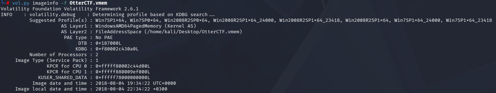
¿Cuál es su análisis respecto al resultado obtenido en “Image local date and time”? Image local date and time: es la hora local configurada en el sistema operativo en la maquina al momento de extraer el volcado de memoria junto a su desplazamiento horario mientras que Image date and time: es una marca de tiempo estandarizada en UTC (Tiempo Universal Coordinado) esta elimina cualquier ambigüedad por cambios de horario. - Identifique el Sistema Operativo y arquitectura que el cibercriminal ha utilizado.
Win7SP1x64
Comando: vol.py kdbgscan -f OtterCTF.vmem
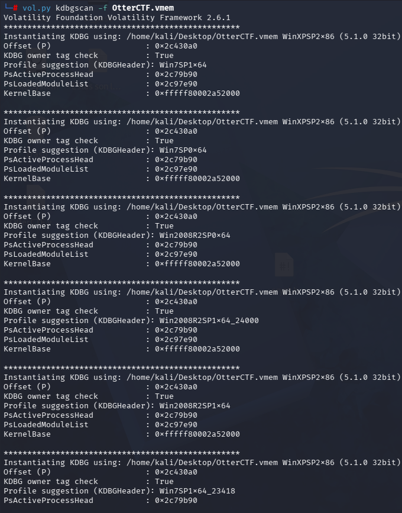
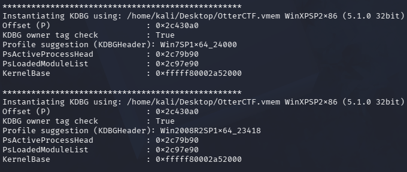
- ¿Cuál es la contraseña del perfil del cibercriminal quién se presume utilizaba el
ordenador pues el inicio de sesión se encontraba visible cuando el sistema en vivo
estaba en ejecución?
MortyIsReallyAnOtter
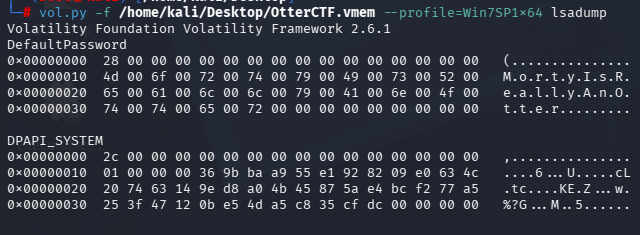
Comandos: vol.py -f /home/kali/Desktop/OtterCTF.vmem --profile=Win7SP1x64 lsadump - Identifique el direccionamiento IP que fue utilizado por el cibercriminal al momento de
atacar el sistema local.
192.168.202.131
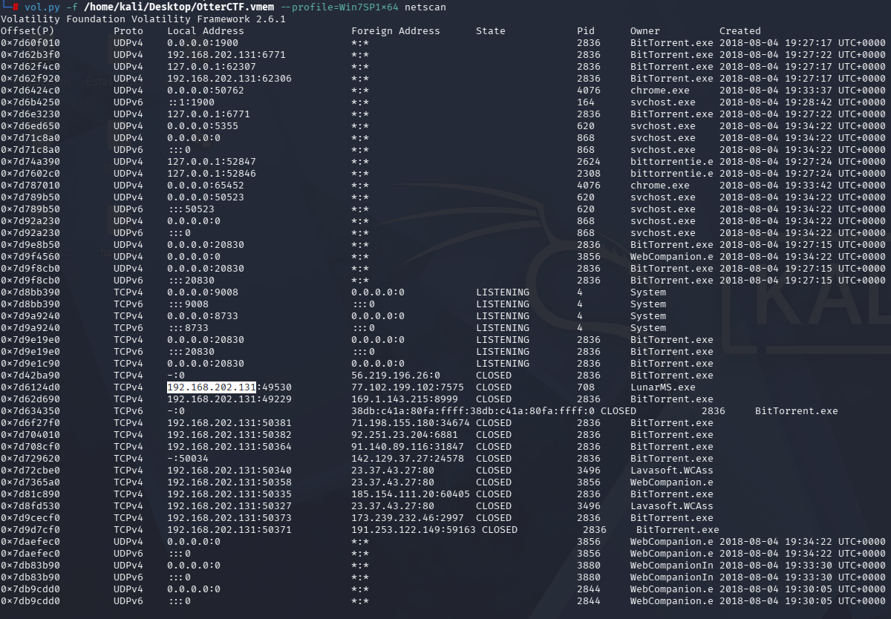
Comando: vol.py -f /home/kali/Desktop/OtterCTF.vmem --profile=Win7SP1x64 netscan - Visualice las llaves del Registro del Sistema disponibles.
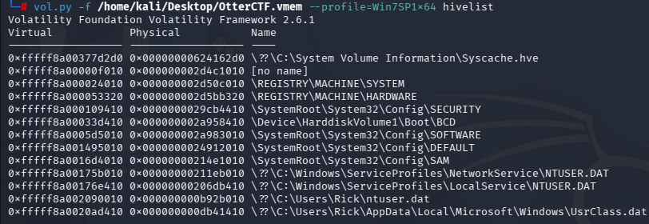
¿Por qué es de utilidad conocer el Registro del Sistema del dispositivo comprometido? Este contiene toda la información de las aplicaciones y configuraciones del equipo hasta el ultimo momento en que el usuario modifico o movió en el sistema operativo.
Comando: vol.py -f /home/kali/Desktop/OtterCTF.vmem --profile=Win7SP1x64 hivelist - Identifique el nombre del ordenador del cibercriminal
Por medio del comando anterior encontramos la llave \REGISTRY\MACHINE/SYTEM en
esta se encuentra en la ruta ControlSet001\Control\ComputerName\ComputerName
en la cual podemos encontrar el nombre del equipo.
WIN-LO6FAF3DTFE
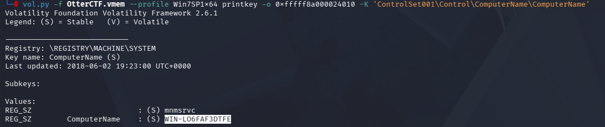
Comando: vol.py -f OtterCTF.vmem --profile Win7SP1x64 printkey -o 0xfffff8a000024010 -K 'ControlSet001\Control\ComputerName\ComputerName' - Identifique tres procesos que considere importante del cual el cibercriminal haya iniciado
la ejecución del software.
Comando: vol.py -f /home/kali/Desktop/OtterCTF.vmem --profile=Win7SP1x64 pslist
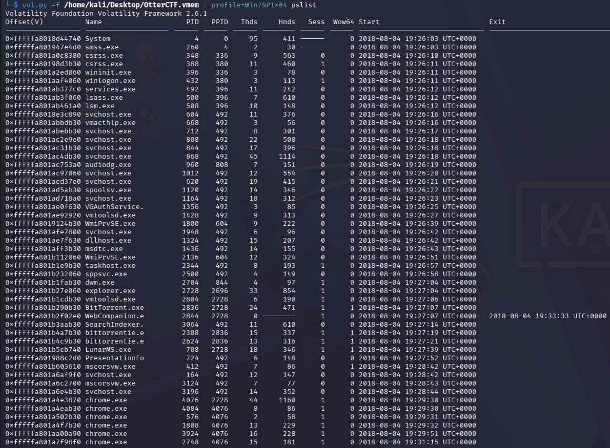
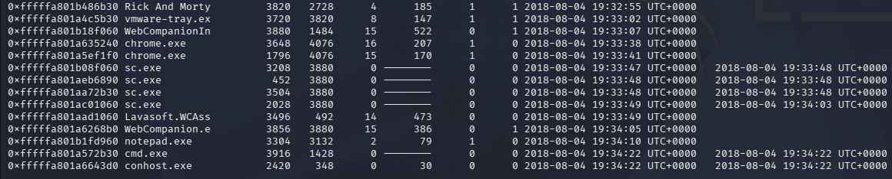
Proceso A: Rick And Morty.exe
¿Por qué considera que es importante?
Al analizar este proceso con el comando vol.py -f /home/kali/Desktop/OtterCTF.vmem --profile=Win7SP1x64 cmdline -p 3820 el cual nos da la ruta del archivo ejecutable se encuentra en una carpeta llamada Torrents esto junto al nombre del archivo que pare estar compartiéndolo como la temporada 1 de Rick and Morty resulte que es un archivo malicioso el cual se puede estar utilizando para vulnerar las computadoras de sus víctimas.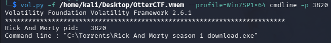
Proceso B: vmware-tray.exe
¿Por qué considera que es importante?
Al analizar los procesos con el comando vol.py -f /home/kali/Desktop/OtterCTF.vmem --profile=Win7SP1x64 pstree el cual nos indica los procesos que fueron lanzados por otros podemos ver que el proceso Rick And Morty manda llamar a este.
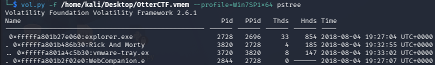
vmware-tray podría parecer un proceso legítimo, pero al analizar la ruta del proceso podemos darnos cuenta que se esta ejecutando desde una ruta inusual.
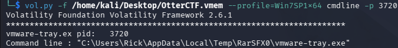
Proceso C: LunarMS.exe
¿Por qué considera que es importante?
La Mesa de Seguridad por la Paz Mundial, el organismo institucional SEDENE ha indicado que el posible autor de los servidores Lunar es utilizado para “publicitar” a víctimas que serán empleadas para prostitución. Por lo cual este proceso es de gran interés. - Identifique el direccionamiento IP que conecta al servidor malicioso.
Comando: vol.py -f /home/kali/Desktop/OtterCTF.vmem --profile=Win7SP1x64 netscan
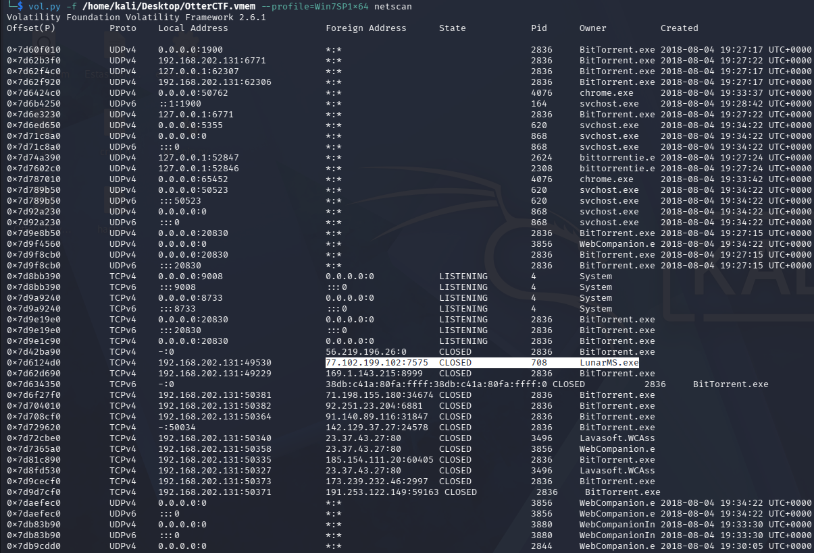
¿Cuál fue el puerto que utilizó además de la dirección IP?
7575
¿Cuál es la ubicación posible del atacante (https://www.geolocation.com/es )?
Londres Inglaterra Lat: 51.50853 Long: -0.12574
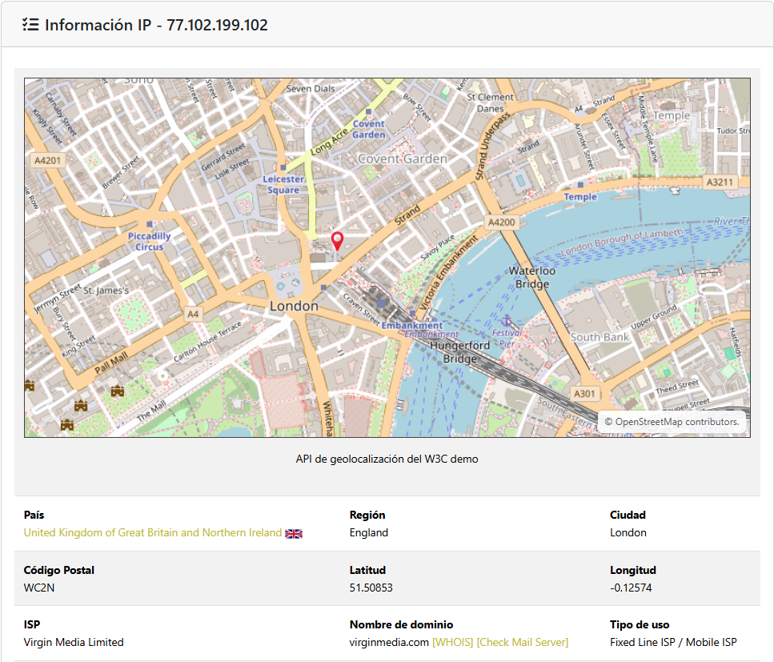
- Identifique los correos electrónicos que el cibercriminal utilizó para llevar a cabo los
ataques de ingeniería social.
Comando: vol.py -f /home/kali/Desktop/OtterCTF.vmem --profile=Win7SP1x64 filescan |grep -i "chrome.*history*"
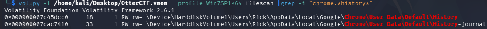
En el análisis de procesos identificamos que solo se usa el navegador Chrome por lo cual con este comando obtenemos información del historial de Chrome y con el siguiente comando: vol.py -f /home/kali/Desktop/OtterCTF.vmem --profile=Win7SP1x64 dumpfiles -Q 0x000000007d45dcc0 -D '/home/kali/Desktop' dumpeamos este.
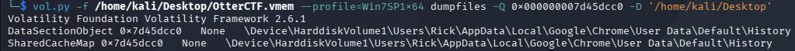
Se crea un archivo .dat que es una base de datos SQLite3database
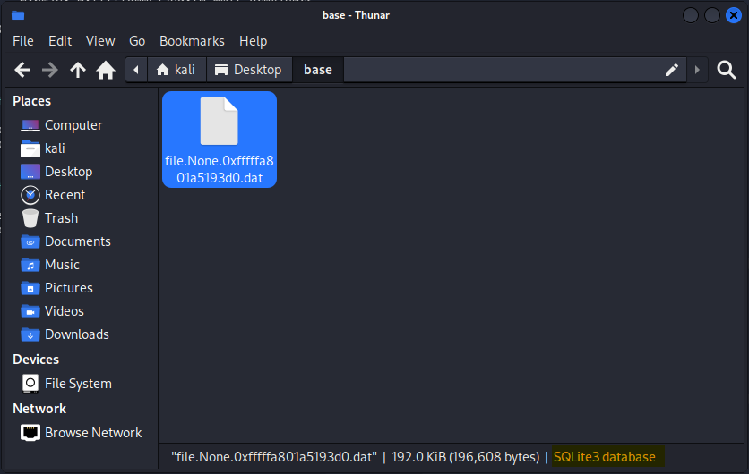
Al abrir esta con software compatible podemos ver las páginas que se visitaron aquí encontramos el dominio de los emails creados.
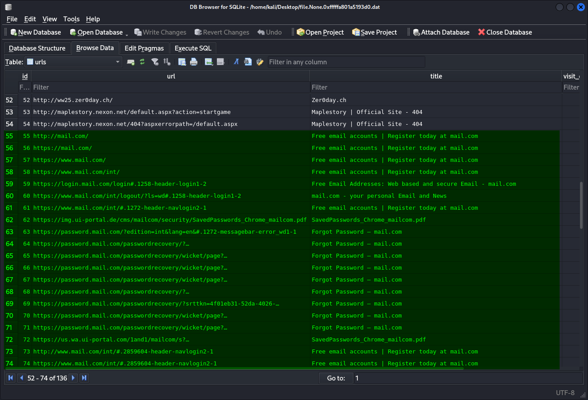
Extraemos las cadenas ASCII estándar de archivo vmem con el siguiente comando: strings /home/kali/Desktop/OtterCTF.vmem > /home/kali/Desktop/OtterCTF.vmem.strings . Y con el comandogrep "@mail.com" '/home/kali/Desktop/OtterCTF.vmem.strings' buscamos dentro de esta cadena ASCII el dominio encontrado @mail.com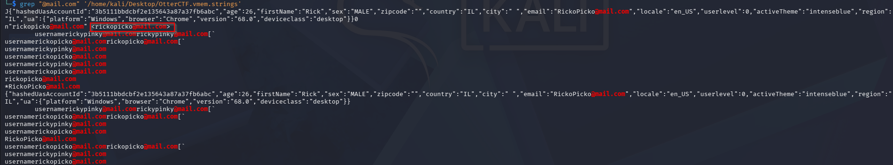
¿Cuáles fueron los correos empleados?
rickopicko@mail.com
¿Desde qué plataforma y navegador fueron abiertos estos correos electrónicos?
Chrome - Después de un análisis exhaustivo, se obtuvo un indicio de interés, se trata del proceso
3720, el cuál fue ejecutado en el ordenador vulnerado, dicho proceso indica una
ejecución falsa de un programa, sin embargo, oculta un mensaje malicioso.
Identifique pues la cartera del monedero cripto a dónde presuntamente son enviado los recursos del rescate.
Comandos: vol.py -f /home/kali/Desktop/OtterCTF.vmem --profile=Win7SP1x64 procdump -p 3720 -D ./ con este comando se extrae el ejecutable del proceso 3720
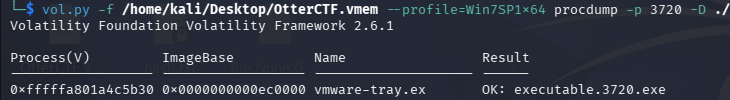
Con este archivo se puede analizar con antivirus usando la página virus total
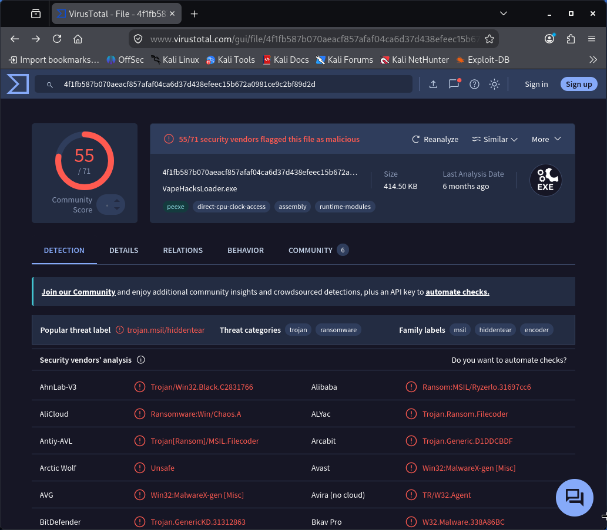
Con la información mostrada nos podemos dar cuenta que pertenece al tipo de malware Ransomware ahora estraemos la memoria del proceso en cuestión con el comando: vol.py -f /home/kali/Desktop/OtterCTF.vmem --profile="Win7SP1x64" memdump -p 3720 -D .
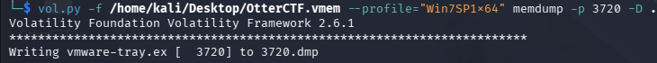
En este buscamos la cadena ransomware en busca de información relevante con el siguiente comando: strings -e l 3720.dmp | grep -i -A 5 "ransomware"
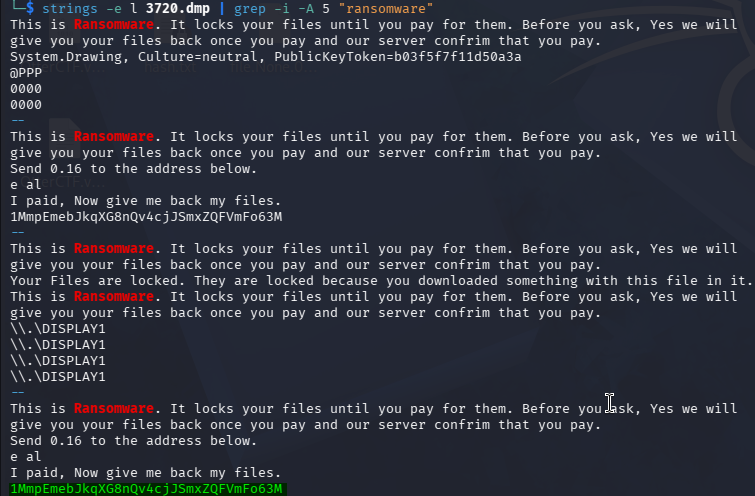
¿Cuál es la cartera de criptomoneda?
1MmpEmebJkqXG8nQv4cjJSmxZQFVmFo63M
¿Dicha cartea se encuentra reportada en listas negras de BTC black (https://btcblack.it/index.cgi/verify)? No
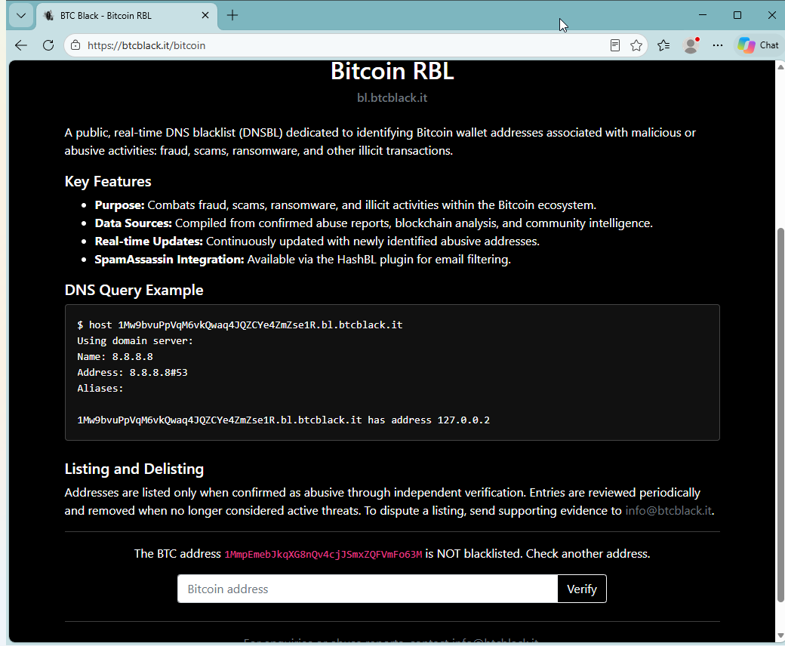
Conclusiones
La herramienta dispone múltiples formas de trabajo por lo cual ciertos procesos o obtención de evidencias puede ser de múltiples formas, aunque la aplicación Volatility usada en este ejercicio esta archivada desde 2025 ya que corre con Python 2 en este caso 2.7.18 el cual esta descontinuado. En mi caso trate de que funcionara sin éxito en mi maquina con Windows 11, por lo cual opte usar Kali Linux encontrando el mismo problema sin embargo encontré las librerías y dependencias y al final logre ejecutarlo rescatando archivos de una distribución del 2023. También se encuentra la herramienta Volatility 3 sin embargo sus comandos son muy diferentes incluyendo la presentación de la información.